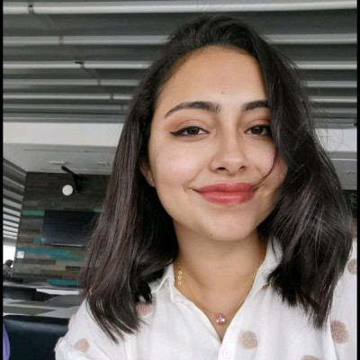

01
NASA CMAPSS · RUL
AeroRUL Predictive Maintenance
Pipeline de maintenance prédictive avec données CMAPSS, ingestion, prétraitement, workflow modèle et interface de prédiction RUL.

Étudiante M2 Intelligence Artificielle & Cybersécurité
🇮🇹 Cagliari, Italie · 🇫🇷 Paris, France
Profil
Étudiante en Master 2 Informatique – Intelligence Artificielle à l'Université de Cagliari, avec une spécialisation en cybersécurité et apprentissage automatique.
J'ai effectué deux séjours à Paris au CNAM : un semestre Erasmus (2024–2025) puis un stage de recherche de 6 mois en Machine Learning (sept. 2025 – mars 2026), où j'ai conçu un pipeline de prétraitement sur 4 datasets de cybersécurité et implémenté un workflow de détection d'anomalies pour des modèles GNN.
Autres projets : classification d'images médicales (>90% de précision, 500+ images), système IoT embarqué sur ESP32, afficheur intelligent Arduino, plateforme e-commerce Laravel.
Géographie
Scroll pour suivre le parcours · Sfax → Cagliari → Paris → Cagliari
🇹🇳 2018 – 2023
Licence ICT spécialisation IoT · Master M1 Systèmes Embarqués
Gestion base de données consommation énergétique · Analyse VBA/Excel
Afficheur publicitaire intelligent Arduino Wi-Fi · Interface web temps réel
Système IoT embarqué ESP32 + EMG · 20+ sessions de tests · Firebase
Plateforme e-commerce Laravel · 50+ produits · Authentification sécurisée
🇮🇹 Oct. 2023 – Août 2024
Master M2 – Ingénierie Informatique · Intelligence Artificielle & Machine Learning
Détection de cancer de la peau · 500+ images · Précision >90% · Serveur web temps réel
Admission au programme d'échange compétitif ERASMUS pour Paris
🇫🇷 Sept. 2024 – Mars 2026
Big Data · Sécurité des Réseaux · Forensique Informatique · Sécurité Web · Malwares
Pipeline de détection d'anomalies sur 4 datasets cybersécurité · Modèles GNN · Séries temporelles
🇮🇹 Mars 2026 – présent
Master M2 en cours · Intelligence Artificielle & Machine Learning
Ingénieure Machine Learning · CDI / CDD · Alternance bienvenue
Sélection
Classés du plus complet au plus ciblé, avec une page de présentation et le dépôt GitHub associé.
Pipeline de maintenance prédictive avec données CMAPSS, ingestion, prétraitement, workflow modèle et interface de prédiction RUL.
Serveur de classification d'images avec modèles TorchVision, upload, transformations, histogrammes et résultats téléchargeables.
Classification de mots de passe faibles, moyens et forts avec TF-IDF et comparaison de modèles supervisés.
Plateforme e-commerce Laravel pour une boutique tech avec catalogue, panier, commande, contacts et tableau de bord.
Savoir-faire
Me contacter
Disponible pour une alternance Ingénieur Machine Learning à Paris.